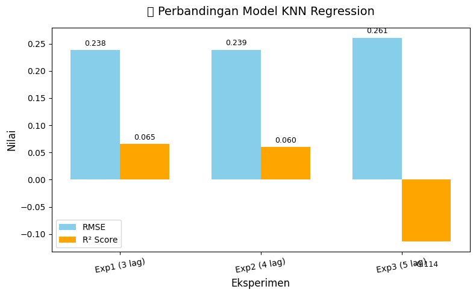

Analisis Prediksi NO2 Menggunakan KNN Regression#
1. Pengambilan Data (Scraping)#
Data diambil dari sumber Dataspace Coneous yang menyediakan informasi cuaca dan kualitas udara. Scraping dilakukan untuk daerah Surakarta dan mengambil periode 1 tahun penuh, dengan mengambil variabel utama yaitu konsentrasi NO2 per hari.
Data mentah memiliki beberapa kolom, namun untuk keperluan analisis, hanya kolom NO2 dan tanggal (date) yang digunakan.
!pip install openeo
import openeo
import pandas as pd
import matplotlib.pyplot as plt
# 1. Koneksi ke Copernicus Data Space
connection = openeo.connect("openeo.dataspace.copernicus.eu").authenticate_oidc()
# 2. AOI: poligon kedua dari data kamu
aoi = {
"type": "Polygon",
"coordinates": [
[
[110.73384843270605, -7.506125504050544],
[110.73384843270605, -7.629910709610229],
[110.93095130302544, -7.629910709610229],
[110.93095130302544, -7.506125504050544],
[110.73384843270605, -7.506125504050544]
]
],
}
# 3. Ambil data Sentinel-5P (band "NO2")
s5p = connection.load_collection(
"SENTINEL_5P_L2",
spatial_extent = {
"west": 110.73384843270605,
"south": -7.629910709610229,
"east": 110.93095130302544,
"north": -7.506125504050544
},
temporal_extent=["2021-06-01", "2021-12-30"],
bands=["NO2"],
)
# 4. Mask nilai negatif (data invalid)
def mask_invalid(x):
return x < 0
s5p_masked = s5p.mask(s5p.apply(mask_invalid))
# 5. Agregasi temporal harian
daily_mean = s5p_masked.aggregate_temporal_period(period="day", reducer="mean")
# 6. Agregasi spasial (rata-rata dalam AOI)
daily_mean_aoi = daily_mean.aggregate_spatial(geometries=aoi, reducer="mean")
# 7. Jalankan batch job dan hasilkan file CSV
job = daily_mean_aoi.execute_batch(out_format="CSV")
# 8. Unduh hasil job
results = job.get_results()
results.download_files("Surakarta")
# 9. Baca file CSV hasil
import os
for f in os.listdir("Surakarta"):
if f.endswith(".csv"):
df = pd.read_csv(os.path.join("Surakarta", f))
print("File ditemukan:", f)
break
# 10. Pastikan kolom tanggal benar
df["date"] = pd.to_datetime(df["date"])
# 11. Buat kolom bulan (YYYY-MM)
df["month"] = df["date"].dt.to_period("M")
# 12. Hitung rata-rata NO2 per bulan
df_monthly = df.groupby("month", as_index=False)["NO2"].mean()
# 13. Visualisasi hasil
plt.figure(figsize=(10,5))
plt.plot(df_monthly["month"].astype(str), df_monthly["NO2"], marker="o", color="blue", label="NO₂ Rata-rata per Bulan")
plt.title("Rata-rata Bulanan NO₂ (Sentinel-5P) di Surakarta")
plt.xlabel("Bulan")
plt.ylabel("Konsentrasi NO₂")
plt.xticks(rotation=45)
plt.grid(True)
plt.legend()
plt.tight_layout()
plt.show()
Requirement already satisfied: openeo in /usr/local/lib/python3.12/dist-packages (0.45.0)
Requirement already satisfied: requests>=2.26.0 in /usr/local/lib/python3.12/dist-packages (from openeo) (2.32.4)
Requirement already satisfied: urllib3>=1.9.0 in /usr/local/lib/python3.12/dist-packages (from openeo) (2.5.0)
Requirement already satisfied: shapely>=1.6.4 in /usr/local/lib/python3.12/dist-packages (from openeo) (2.1.2)
Requirement already satisfied: numpy>=1.17.0 in /usr/local/lib/python3.12/dist-packages (from openeo) (2.0.2)
Requirement already satisfied: xarray<2025.01.2,>=0.12.3 in /usr/local/lib/python3.12/dist-packages (from openeo) (2025.1.1)
Requirement already satisfied: pandas>0.20.0 in /usr/local/lib/python3.12/dist-packages (from openeo) (2.2.2)
Requirement already satisfied: pystac>=1.5.0 in /usr/local/lib/python3.12/dist-packages (from openeo) (1.14.1)
Requirement already satisfied: deprecated>=1.2.12 in /usr/local/lib/python3.12/dist-packages (from openeo) (1.2.18)
Requirement already satisfied: wrapt<2,>=1.10 in /usr/local/lib/python3.12/dist-packages (from deprecated>=1.2.12->openeo) (1.17.3)
Requirement already satisfied: python-dateutil>=2.8.2 in /usr/local/lib/python3.12/dist-packages (from pandas>0.20.0->openeo) (2.9.0.post0)
Requirement already satisfied: pytz>=2020.1 in /usr/local/lib/python3.12/dist-packages (from pandas>0.20.0->openeo) (2025.2)
Requirement already satisfied: tzdata>=2022.7 in /usr/local/lib/python3.12/dist-packages (from pandas>0.20.0->openeo) (2025.2)
Requirement already satisfied: charset_normalizer<4,>=2 in /usr/local/lib/python3.12/dist-packages (from requests>=2.26.0->openeo) (3.4.4)
Requirement already satisfied: idna<4,>=2.5 in /usr/local/lib/python3.12/dist-packages (from requests>=2.26.0->openeo) (3.11)
Requirement already satisfied: certifi>=2017.4.17 in /usr/local/lib/python3.12/dist-packages (from requests>=2.26.0->openeo) (2025.10.5)
Requirement already satisfied: packaging>=23.2 in /usr/local/lib/python3.12/dist-packages (from xarray<2025.01.2,>=0.12.3->openeo) (25.0)
Requirement already satisfied: six>=1.5 in /usr/local/lib/python3.12/dist-packages (from python-dateutil>=2.8.2->pandas>0.20.0->openeo) (1.17.0)
[###################################--] ⌛ Polling---------------------------------------------------------------------------
KeyboardInterrupt Traceback (most recent call last)
/tmp/ipython-input-3794286045.py in <cell line: 0>()
5
6 # 1. Koneksi ke Copernicus Data Space
----> 7 connection = openeo.connect("openeo.dataspace.copernicus.eu").authenticate_oidc()
8
9 # 2. AOI: poligon kedua dari data kamu
/usr/local/lib/python3.12/dist-packages/openeo/rest/connection.py in authenticate_oidc(self, provider_id, client_id, client_secret, store_refresh_token, use_pkce, display, max_poll_time)
619 client_info=client_info, use_pkce=use_pkce, display=display, max_poll_time=max_poll_time
620 )
--> 621 con = self._authenticate_oidc(
622 authenticator,
623 provider_id=provider_id,
/usr/local/lib/python3.12/dist-packages/openeo/rest/connection.py in _authenticate_oidc(self, authenticator, provider_id, store_refresh_token, fallback_refresh_token_to_store, oidc_auth_renewer)
349 Authenticate through OIDC and set up bearer token (based on OIDC access_token) for further requests.
350 """
--> 351 tokens = authenticator.get_tokens(request_refresh_token=store_refresh_token)
352 _log.info("Obtained tokens: {t}".format(t=[k for k, v in tokens._asdict().items() if v]))
353 if store_refresh_token:
/usr/local/lib/python3.12/dist-packages/openeo/rest/auth/oidc.py in get_tokens(self, request_refresh_token)
920 poll_ui.show_progress(status="Polling")
921 # TODO: skip occasional failing requests? (e.g. see `SkipIntermittentFailures` from openeo-aggregator)
--> 922 resp = self._requests.post(url=token_endpoint, data=post_data, timeout=5)
923 if resp.status_code == 200:
924 log.info(f"[{elapsed():5.1f}s] Authorized successfully.")
/usr/local/lib/python3.12/dist-packages/requests/sessions.py in post(self, url, data, json, **kwargs)
635 """
636
--> 637 return self.request("POST", url, data=data, json=json, **kwargs)
638
639 def put(self, url, data=None, **kwargs):
/usr/local/lib/python3.12/dist-packages/requests/sessions.py in request(self, method, url, params, data, headers, cookies, files, auth, timeout, allow_redirects, proxies, hooks, stream, verify, cert, json)
587 }
588 send_kwargs.update(settings)
--> 589 resp = self.send(prep, **send_kwargs)
590
591 return resp
/usr/local/lib/python3.12/dist-packages/requests/sessions.py in send(self, request, **kwargs)
701
702 # Send the request
--> 703 r = adapter.send(request, **kwargs)
704
705 # Total elapsed time of the request (approximately)
/usr/local/lib/python3.12/dist-packages/requests/adapters.py in send(self, request, stream, timeout, verify, cert, proxies)
665
666 try:
--> 667 resp = conn.urlopen(
668 method=request.method,
669 url=url,
/usr/local/lib/python3.12/dist-packages/urllib3/connectionpool.py in urlopen(self, method, url, body, headers, retries, redirect, assert_same_host, timeout, pool_timeout, release_conn, chunked, body_pos, preload_content, decode_content, **response_kw)
785
786 # Make the request on the HTTPConnection object
--> 787 response = self._make_request(
788 conn,
789 method,
/usr/local/lib/python3.12/dist-packages/urllib3/connectionpool.py in _make_request(self, conn, method, url, body, headers, retries, timeout, chunked, response_conn, preload_content, decode_content, enforce_content_length)
532 # Receive the response from the server
533 try:
--> 534 response = conn.getresponse()
535 except (BaseSSLError, OSError) as e:
536 self._raise_timeout(err=e, url=url, timeout_value=read_timeout)
/usr/local/lib/python3.12/dist-packages/urllib3/connection.py in getresponse(self)
563
564 # Get the response from http.client.HTTPConnection
--> 565 httplib_response = super().getresponse()
566
567 try:
/usr/lib/python3.12/http/client.py in getresponse(self)
1428 try:
1429 try:
-> 1430 response.begin()
1431 except ConnectionError:
1432 self.close()
/usr/lib/python3.12/http/client.py in begin(self)
329 # read until we get a non-100 response
330 while True:
--> 331 version, status, reason = self._read_status()
332 if status != CONTINUE:
333 break
/usr/lib/python3.12/http/client.py in _read_status(self)
290
291 def _read_status(self):
--> 292 line = str(self.fp.readline(_MAXLINE + 1), "iso-8859-1")
293 if len(line) > _MAXLINE:
294 raise LineTooLong("status line")
/usr/lib/python3.12/socket.py in readinto(self, b)
718 while True:
719 try:
--> 720 return self._sock.recv_into(b)
721 except timeout:
722 self._timeout_occurred = True
/usr/lib/python3.12/ssl.py in recv_into(self, buffer, nbytes, flags)
1249 "non-zero flags not allowed in calls to recv_into() on %s" %
1250 self.__class__)
-> 1251 return self.read(nbytes, buffer)
1252 else:
1253 return super().recv_into(buffer, nbytes, flags)
/usr/lib/python3.12/ssl.py in read(self, len, buffer)
1101 try:
1102 if buffer is not None:
-> 1103 return self._sslobj.read(len, buffer)
1104 else:
1105 return self._sslobj.read(len)
KeyboardInterrupt:
from google.colab import files
uploaded = files.upload()
Saving surakarta.csv to surakarta.csv
import pandas as pd
# Baca file CSV
df = pd.read_csv("surakarta.csv", sep=';')
print(df.columns)
# Bersihkan kolom NO2
df['NO2'] = (
df['NO2']
.replace('', pd.NA)
.str.replace(',', '.', regex=False)
)
# Ubah ke numerik
df['NO2'] = pd.to_numeric(df['NO2'], errors='coerce')
# Ubah kolom date ke datetime
df['date'] = pd.to_datetime(df['date'], utc=True, errors='coerce')
# Urutkan berdasarkan tanggal
df = df.sort_values(by='date').reset_index(drop=True)
# Tampilkan ringkasan
print(df.info())
print(df.head())
Index(['date', 'feature_index', 'NO2'], dtype='object')
<class 'pandas.core.frame.DataFrame'>
RangeIndex: 395 entries, 0 to 394
Data columns (total 3 columns):
# Column Non-Null Count Dtype
--- ------ -------------- -----
0 date 395 non-null datetime64[ns, UTC]
1 feature_index 395 non-null int64
2 NO2 235 non-null float64
dtypes: datetime64[ns, UTC](1), float64(1), int64(1)
memory usage: 9.4 KB
None
date feature_index NO2
0 2020-05-31 00:00:00+00:00 0 NaN
1 2020-06-01 00:00:00+00:00 0 NaN
2 2020-06-02 00:00:00+00:00 0 3.310000e+10
3 2020-06-03 00:00:00+00:00 0 NaN
4 2020-06-04 00:00:00+00:00 0 2.840000e+11
df = df.drop(columns=['date', 'feature_index'])
print(df.head(10))
NO2
0 NaN
1 NaN
2 3.310000e+10
3 NaN
4 2.840000e+11
5 2.870000e+11
6 3.380000e+10
7 2.780000e+10
8 2.910000e+11
9 3.100000e+10
3. Pembersihan dan Pra-Pemrosesan Data#
a. Menangani Missing Values
Pada dataset yang diunduh, ditemukan beberapa nilai hilang (missing values) di kolom NO2. Untuk menjaga kontinuitas data deret waktu (time series), nilai-nilai hilang diisi menggunakan metode interpolasi linear:
Metode ini memperkirakan nilai di antara dua titik data terdekat, menjaga kestabilan pola data.
print(df['NO2'].isna().sum())
160
df['NO2'] = df['NO2'].interpolate(method='linear')
print(df['NO2'].isna().sum())
df[df['NO2'].isna()]
2
| NO2 | |
|---|---|
| 0 | NaN |
| 1 | NaN |
df['NO2'] = df['NO2'].interpolate(method='linear').bfill()
print(df['NO2'].isna().sum())
0
b. Normalisasi Data
Agar semua nilai berada dalam rentang yang sama dan mencegah dominasi nilai besar terhadap model, dilakukan normalisasi Min-Max yaitu Normalisasi dengan menghasilkan nilai antara 0 hingga 1.
from sklearn.preprocessing import MinMaxScaler
scaler = MinMaxScaler()
df['NO2_norm'] = scaler.fit_transform(df[['NO2']])
print(df.head(10))
NO2 NO2_norm
0 3.310000e+10 0.052405
1 3.310000e+10 0.052405
2 3.310000e+10 0.052405
3 1.585500e+11 0.263589
4 2.840000e+11 0.474774
5 2.870000e+11 0.479824
6 3.380000e+10 0.053583
7 2.780000e+10 0.043483
8 2.910000e+11 0.486558
9 3.100000e+10 0.048870
4. Pembentukan Data Supervised#
Karena data NO2 bersifat deret waktu, maka dibentuk data supervised untuk memprediksi nilai ke depan berdasarkan beberapa nilai sebelumnya.
Tiga eksperimen dilakukan dengan variasi jumlah lag:
Eksperimen 1: Menggunakan 3 lag (NO2-t3, NO2-t2, NO2-t1, NO2)
Eksperimen 2: Menggunakan 4 lag (NO2-t4, NO2-t3, NO2-t2, NO2-t1, NO2)
Eksperimen 3: Menggunakan 5 lag (NO2-t5, NO2-t4, NO2-t3, NO2-t2, NO2-t1, NO2)
Tujuannya adalah untuk melihat pengaruh jumlah lag terhadap performa model.
import pandas as pd
def make_supervised(df, target_col='NO2', n_lags=3):
"""
Membuat dataset supervised learning dengan lag features.
Parameters:
df : DataFrame dengan kolom target (misal 'NO2')
target_col : nama kolom target
n_lags : jumlah lag yang ingin digunakan (misal 3 → t-1, t-2, t-3)
Returns:
DataFrame baru dengan kolom lag + target (tanpa NaN)
"""
df_supervised = df.copy()
# Buat kolom lag
for i in range(1, n_lags + 1):
df_supervised[f'{target_col}_t-{i}'] = df_supervised[target_col].shift(i)
# Urutkan kolom biar rapi (lag dulu, target terakhir)
cols = [f'{target_col}_t-{i}' for i in range(n_lags, 0, -1)] + [target_col]
df_supervised = df_supervised[cols]
# Hapus baris dengan NaN (karena hasil shift)
df_supervised = df_supervised.dropna().reset_index(drop=True)
return df_supervised
# Pastikan df hanya punya kolom NO2
df = df[['NO2']].copy().reset_index(drop=True)
# Eksperimen 1: 3 lag
df_exp1 = make_supervised(df, n_lags=3)
print("Eksperimen 1 (3 lag):")
print(df_exp1.head(), "\n")
# Eksperimen 2: 4 lag
df_exp2 = make_supervised(df, n_lags=4)
print("Eksperimen 2 (4 lag):")
print(df_exp2.head(), "\n")
# Eksperimen 3: 5 lag
df_exp3 = make_supervised(df, n_lags=5)
print("Eksperimen 3 (5 lag):")
print(df_exp3.head(), "\n")
Eksperimen 1 (3 lag):
NO2_t-3 NO2_t-2 NO2_t-1 NO2
0 3.310000e+10 3.310000e+10 3.310000e+10 1.585500e+11
1 3.310000e+10 3.310000e+10 1.585500e+11 2.840000e+11
2 3.310000e+10 1.585500e+11 2.840000e+11 2.870000e+11
3 1.585500e+11 2.840000e+11 2.870000e+11 3.380000e+10
4 2.840000e+11 2.870000e+11 3.380000e+10 2.780000e+10
Eksperimen 2 (4 lag):
NO2_t-4 NO2_t-3 NO2_t-2 NO2_t-1 NO2
0 3.310000e+10 3.310000e+10 3.310000e+10 1.585500e+11 2.840000e+11
1 3.310000e+10 3.310000e+10 1.585500e+11 2.840000e+11 2.870000e+11
2 3.310000e+10 1.585500e+11 2.840000e+11 2.870000e+11 3.380000e+10
3 1.585500e+11 2.840000e+11 2.870000e+11 3.380000e+10 2.780000e+10
4 2.840000e+11 2.870000e+11 3.380000e+10 2.780000e+10 2.910000e+11
Eksperimen 3 (5 lag):
NO2_t-5 NO2_t-4 NO2_t-3 NO2_t-2 NO2_t-1 \
0 3.310000e+10 3.310000e+10 3.310000e+10 1.585500e+11 2.840000e+11
1 3.310000e+10 3.310000e+10 1.585500e+11 2.840000e+11 2.870000e+11
2 3.310000e+10 1.585500e+11 2.840000e+11 2.870000e+11 3.380000e+10
3 1.585500e+11 2.840000e+11 2.870000e+11 3.380000e+10 2.780000e+10
4 2.840000e+11 2.870000e+11 3.380000e+10 2.780000e+10 2.910000e+11
NO2
0 2.870000e+11
1 3.380000e+10
2 2.780000e+10
3 2.910000e+11
4 3.100000e+10
5. Pembangunan Model KNN Regression#
Untuk setiap eksperimen, digunakan model KNN Regressor dari scikit-learn dengan parameter n_neighbors=3. Model dilatih dengan pembagian data train-test split 80:20 tanpa shuffle karena bersifat time series.
Proses pelatihan dan evaluasi:
import numpy as np
import pandas as pd
from sklearn.model_selection import train_test_split
from sklearn.neighbors import KNeighborsRegressor
from sklearn.preprocessing import MinMaxScaler
from sklearn.metrics import mean_squared_error, r2_score
# -------------------------------------------------------
# 1️⃣ Simpan dataset yang sudah kamu buat sebelumnya
# -------------------------------------------------------
datasets = {
'Exp1 (3 lag)': df_exp1,
'Exp2 (4 lag)': df_exp2,
'Exp3 (5 lag)': df_exp3
}
# -------------------------------------------------------
# 2️⃣ Fungsi training & evaluasi model KNN
# -------------------------------------------------------
def train_knn(df_supervised, n_neighbors=3):
# Normalisasi agar skala NO2 seragam
scaler = MinMaxScaler()
scaled = scaler.fit_transform(df_supervised)
df_scaled = pd.DataFrame(scaled, columns=df_supervised.columns)
# Pisahkan fitur (lag) dan target (NO2)
X = df_scaled.drop('NO2', axis=1)
y = df_scaled['NO2']
# Split data tanpa shuffle (karena time series)
X_train, X_test, y_train, y_test = train_test_split(
X, y, test_size=0.2, shuffle=False
)
# Buat model KNN Regressor
model = KNeighborsRegressor(n_neighbors=n_neighbors)
model.fit(X_train, y_train)
# Prediksi
y_pred = model.predict(X_test)
# Evaluasi
rmse = np.sqrt(mean_squared_error(y_test, y_pred))
r2 = r2_score(y_test, y_pred)
return rmse, r2, y_test, y_pred
6. Hasil Evaluasi Model#
Setelah model dilatih untuk tiga eksperimen, diperoleh hasil evaluasi sebagai berikut:
# -------------------------------------------------------
# 3️⃣ Jalankan untuk ketiga eksperimen
# -------------------------------------------------------
results = []
for name, data in datasets.items():
rmse, r2, y_test, y_pred = train_knn(data)
results.append({'Eksperimen': name, 'RMSE': rmse, 'R²': r2})
print(f"\n=== {name} ===")
print(f"RMSE: {rmse:.4f}")
print(f"R²: {r2:.4f}")
print(pd.DataFrame({'Actual': y_test.values, 'Predicted': y_pred}).head(10))
# -------------------------------------------------------
# 4️⃣ Bandingkan hasil
# -------------------------------------------------------
results_df = pd.DataFrame(results)
print("\n📊 Hasil Perbandingan Model KNN Regression:\n")
print(results_df)
=== Exp1 (3 lag) ===
RMSE: 0.2381
R²: 0.0654
Actual Predicted
0 0.439422 0.202566
1 0.314513 0.501204
2 0.189603 0.215804
3 0.064694 0.100966
4 0.599347 0.155722
5 0.387236 0.320764
6 0.276916 0.255301
7 0.166597 0.172421
8 0.056277 0.071259
9 0.040621 0.155179
=== Exp2 (4 lag) ===
RMSE: 0.2388
R²: 0.0600
Actual Predicted
0 0.439422 0.202566
1 0.314513 0.362789
2 0.189603 0.220349
3 0.064694 0.071259
4 0.599347 0.152916
5 0.387236 0.337463
6 0.276916 0.301146
7 0.166597 0.286299
8 0.056277 0.106736
9 0.040621 0.155179
=== Exp3 (5 lag) ===
RMSE: 0.2609
R²: -0.1140
Actual Predicted
0 0.314513 0.360941
1 0.189603 0.282722
2 0.064694 0.143919
3 0.599347 0.155722
4 0.387236 0.163379
5 0.276916 0.408605
6 0.166597 0.170978
7 0.056277 0.235061
8 0.040621 0.041051
9 0.062337 0.053306
📊 Hasil Perbandingan Model KNN Regression:
Eksperimen RMSE R²
0 Exp1 (3 lag) 0.238149 0.065367
1 Exp2 (4 lag) 0.238833 0.059992
2 Exp3 (5 lag) 0.260898 -0.113968
7. Visualisasi Perbandingan Model#
Untuk mempermudah interpretasi hasil, dibuat visualisasi perbandingan menggunakan grafik batang:
Sumbu X: Eksperimen (3 lag, 4 lag, 5 lag)
Sumbu Y: Nilai RMSE dan R²
Grafik ini membantu melihat perbedaan performa antar konfigurasi model secara visual.
import matplotlib.pyplot as plt
import numpy as np
# --- Visualisasi hasil perbandingan ---
x = np.arange(len(results_df))
width = 0.35
fig, ax = plt.subplots(figsize=(8, 5))
# Plot batang RMSE & R² langsung dari results_df
bars1 = ax.bar(x - width/2, results_df['RMSE'], width, label='RMSE', color='skyblue')
bars2 = ax.bar(x + width/2, results_df['R²'], width, label='R² Score', color='orange')
# Judul & label sumbu
ax.set_title("📊 Perbandingan Model KNN Regression", fontsize=14, pad=15)
ax.set_xlabel("Eksperimen", fontsize=12)
ax.set_ylabel("Nilai", fontsize=12)
ax.set_xticks(x)
ax.set_xticklabels(results_df['Eksperimen'], rotation=10)
ax.legend()
# Tambahkan nilai di atas batang
for bars in [bars1, bars2]:
for bar in bars:
height = bar.get_height()
ax.text(
bar.get_x() + bar.get_width()/2,
height + 0.005 if height >= 0 else height - 0.05,
f"{height:.3f}",
ha='center', va='bottom', fontsize=9
)
plt.tight_layout()
plt.show()
/tmp/ipython-input-2854695262.py:33: UserWarning: Glyph 128202 (\N{BAR CHART}) missing from font(s) DejaVu Sans.
plt.tight_layout()
/usr/local/lib/python3.12/dist-packages/IPython/core/pylabtools.py:151: UserWarning: Glyph 128202 (\N{BAR CHART}) missing from font(s) DejaVu Sans.
fig.canvas.print_figure(bytes_io, **kw)
